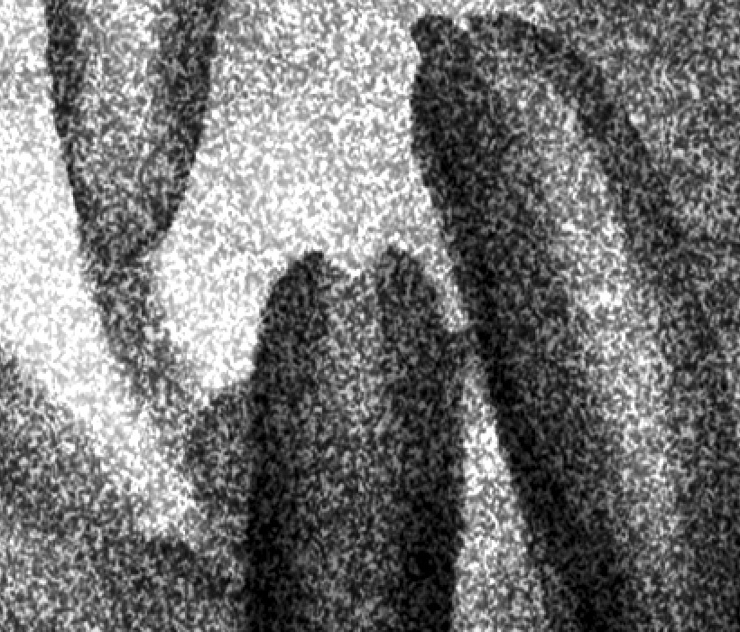
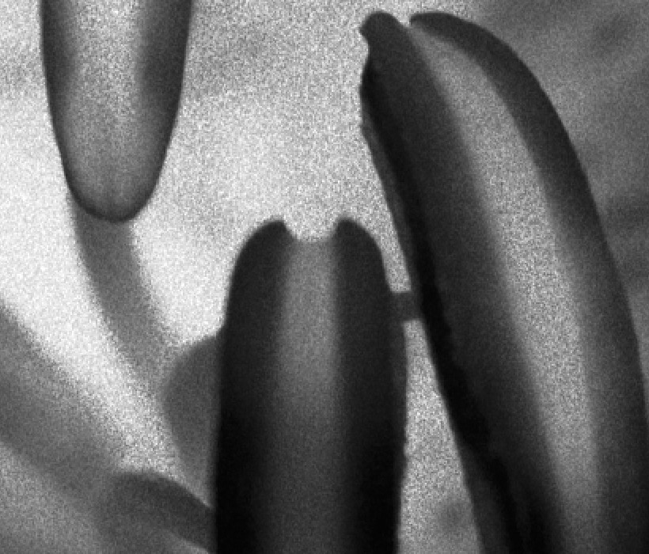

Grain Library
The following examples provide a sense of the varied film grains available in TrueGrain and how they are expressed in the same image. Each film includes native spectral response curves as well as measured curves for one or more color filters.
The examples below are shown at 100% with the grain sized for 120 film (6x8 film) except where noted. While this is not a typical use case, it makes clear the variation in grain and exposure characteristics across these different films. You can easily exaggerate or understate the transformation of your imagery with the parametric tools in TrueGrain.
We encourage you to download the app and demo any of these films using your own images!
| Original | Agfa APX 100 |
| Agfa APX 400 | Bergger BRF 200 |
| Fortepan 200 | Fuji Neo Pan Acros 100 |
| Fuji Neopan 400 | Ilford Delta 400 |
| Ilford Delta 3200 | Ilford FP4 Plus |
| Ilford HP5 Plus | Ilford Pan F Plus |
| Kodak Panatomic X | Kodak Plus-X |
| Kodak Professional T-MAX 400 | Kodak Professional T-MAX 3200 (135 film) |
| Kodak Professional TRI-X 400 | Kodak TRI-X Pan 400 |
| Kodak Verichrome Pan | Konika IR 750nm (135 film) |
| Orwo NP22 | Rollei Infrared |
Next pages:
- Watch a video about how TrueGrain works & learn more about TrueGrain’s features
- Get a detailed description of how TrueGrain can integrate into your workflow
- Download the demo for your platform
Previous pages:
Copyright © 2007-2009 Grubba Software. All rights reserved.
Privacy Policy - Contact/About Grubba Software - Media/Press Info
The trademarked names of film producers and their products referenced here are the property of their respective owners.